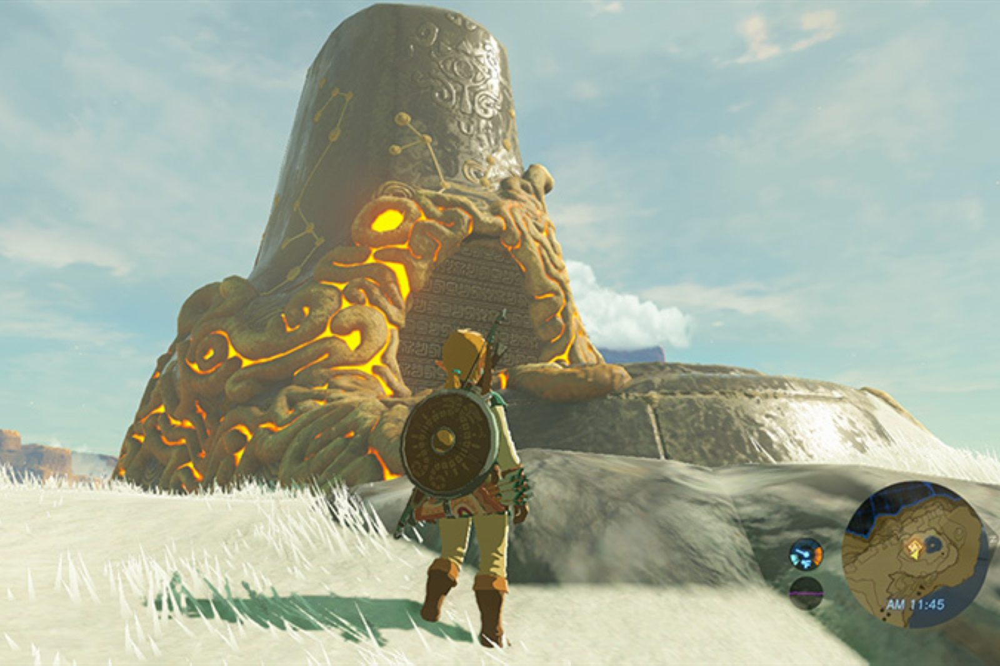
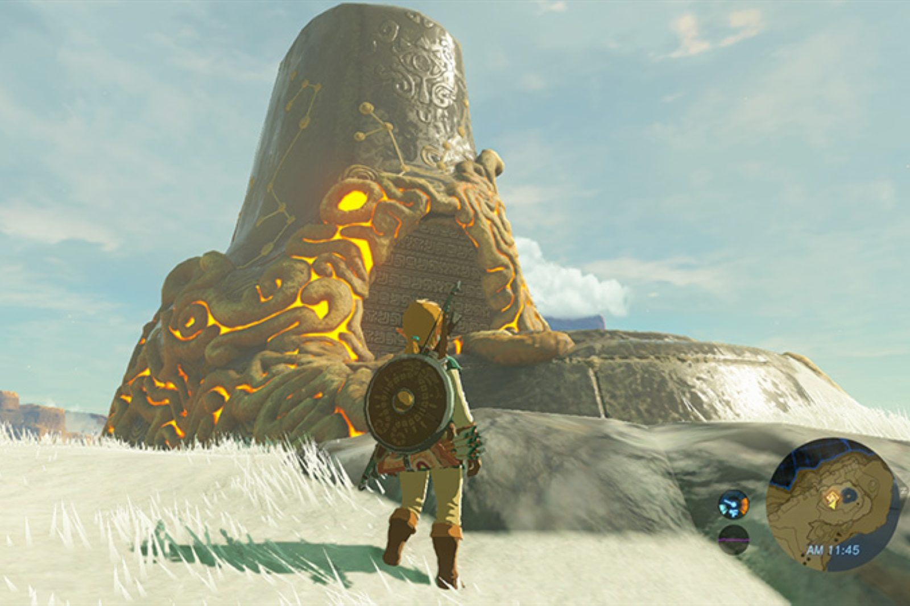

THE LEGEND OF ZELDA: TALE OF HYRULE
DESCRIPCION
The Legend of Zelda: Tale of Hyrule es la nueva odisea que cambiará la forma en que ves Hyrule y su
historia.
Un reino partido en dos, donde la luz y la sombra coexisten:
una tierra reconstruida, llena de esperanza, y otra sumida en ruinas, detenida en el tiempo por una
catástrofe ancestral.
En esta aventura, Link no solo será el héroe, será el puente entre mundos.
Deberá atravesar estos reinos paralelos, enfrentándose a desafíos que pondrán a prueba su ingenio y su
valentía.
Lo que haga en un mundo, cambiará el otro: un desierto podrá convertirse en un oasis, una ciudad flotante
podrá descender del cielo,
o una antigua máquina despertará y caminará por el reino como un templo en movimiento.
Con la aparición de un sistema de runas revolucionario, donde la magia se combina y se personaliza,
crea artefactos poderosos con la ayuda de aliados únicos y herederos de los antiguos elegidos.
Cada elección, cada alianza, cada objeto que construyas tendrá consecuencias en ambos mundos.
Tale of Hyrule no solo redefine lo que significa ser el Héroe del Tiempo. Lo reescribe.
Y lo mejor de todo: tú tienes el poder de darle forma a este destino. Es hora de tomar las riendas. Hyrule
necesita tu ayuda. Y este es tu momento.
CAMPAÑA
Ya terminada la fase de diseño, tanto mecánico como artístico. Estamos trabajando en el desarrollo de las mecánicas, la implementación del sistema de runas y
la interacción de estas en los diferentes mundos, se espera terminarlas para Julio de 2025, a continuación mostraremos una serie de metas predeterminadas, aunque
suceptibles de cambio, para el desarrollo de The Legend of Zelda: Tale of Hyrule:
· Abril 2025 - Diseño de niveles, Concepts Arts y diseño de mecánicas con puzzles. [Completada]
· Julio 2025 - Implementación de mecánicas y prototipado de niveles (misiones, historia y puzzles)
[En proceso]
· Febrero 2026 - Creación e implementación de los dos reinos.
· Junio/Julio 2026 - Versión Alpha
· Septiembre 2026 - Versión Beta
· Noviembre 2026 - Lanzamiento Global
OBJETIVOS
Antes de nada, agradecer a todos los contribuyentes y apoyo de los usuarios interesados, esto es gracias a vuestro apoyo!
Para poder continuar con la campaña, necesitaremos recaudar un fondo de 20.000€. Además, hemos preparado una serie de metas a alcanzar para
poder brindar la mejor versión de esta esperada entrega que sigue las aventuras del héroe hyliano:
40.000 € - Adición de nuevos niveles de dificultad
Modo de juego para los más expertos, implementando patrones de ataque evolutivos para los bosses y enemigos.
60.000 € - Expansión Amiibo
Implementación de nuevas funciones para gran variedad de amiibos con misiones secundarias y botín exclusivo.
100.000 € - Reino eterno
Modo de juego adicional que consiste en la conquista de una mazmorra infinita, con enemigos progresivamente más fuertes. Para
ello contrataremos programadores seniors con el objetivo de asegurar la calidad del gameplay.
CONTRIBUCIONES
Si estás interesado en el desarrollo de The Legend of Zelda: Tale of Hyrule, ahora puedes formar parte de él.
Tu apoyo es más que solo dinero, es confianza, ilusión y ganas de aventurarse al mundo de Tale of Hyrule. Hemos preparado varias formas
en las que puedes ayudar a hacer realidad este proyecto, e incluso llegar a más implementaciones(indicadas en la sección de objetivos).
Cada contribución, por más pequeña que sea, nos acerca aún más a nuestro objetivo.
¡Y viene acompañada con recompensas exclusivas para ti!
Contribución Hyliana | 1€ - 4€
·Acceso anticipado a novedades y fases de desarrollo del juego.
Contribución de "El aventurero" | 5€ - 9€
·Todas las recompensas anteriores.
·Fondo de pantalla digital exclusivo.
·Acceso anticipado al tráiler extendido.
Contribución de "Héroe fundador" | 10€ - 19€
·Todas las recompensas anteriores.
·Nombre en los créditos como "Héroe Fundador".
·Acceso exclusivo a una demo interactiva de prueba
Contribución de "Guardián del reino" | 20€ - 49€
·Todas las recompensas anteriores.
·Libro de arte digital(con Concept Arts) descargable.
·Descarga anticipada de la banda sonora original.
·Participación en encuestas sobre decisiones menores en el desarrollo.
Contribución de "El elegido" | 50€ o más
·Todas las recompensas anteriores.
·Agradecimiento especial en los créditos finales.
·Invitación a una videollamada exclusiva con el equipo, en la que se tratará más a fondo el contenido y los aspectos del juego.
Además de la participación en una breve ronda de preguntas.
·Participación en un concurso privado de diseño, en el que se aportarán ideas para objetos, personajes y enemigos.
Las mejores se incluirán con mención.
PREGUNTAS FRECUENTES
¿Este juego es parte de la serie oficial de The Legend of Zelda?
The Legend of Zelda: Tale of Hyrule es una entrega completamente nueva dentro del universo de
Zelda.
Explora una historia inédita ambientada en un Hyrule dividido entre luz y sombra, con mecánicas innovadoras
que redefinen el concepto de mundos paralelos
y el rol del Héroe del Tiempo.
¿Cómo funciona el sistema de mundos paralelos en Tale of Hyrule?
El juego presenta dos versiones de Hyrule: una llena de vida y esperanza, y otra sumida en ruinas debido a
una catástrofe ancestral.
Las decisiones que tomes en un mundo afectarán directamente al otro, abriendo múltiples posibilidades en la
jugabilidad.
¿Cuándo estará disponible el juego?
Actualmente, Tale of Hyrule está en fase de desarrollo y se espera que Tale of Hyrule esté
disponible a finales de 2026.
Las actualizaciones sobre el avance del proyecto se irán publicando periódicamente en nuestros canales
oficiales.
¿En qué plataformas estará disponible el juego?
The Legend of Zelda: Tale of Hyrule está previsto para su lanzamiento en Nintendo Switch y en la
próxima consola de Nintendo.
También se evalúa su disponibilidad en formato digital a través de la Nintendo eShop.
¿Qué tipo de contenido adicional o ediciones especiales estarán disponibles?
Habrá una Edición Especial que incluirá un libro de arte, un mapa de Hyrule reversible y una figura
coleccionable de Link entre mundos.
Además, se planea contenido descargable (DLC) que ampliará la historia y añadirá nuevas runas, zonas y
desafíos.
¿Habrá merchandising para los fans de la saga?
¡Definitivamente! The Legend of Zelda: Tale of Hyrule contará con una amplia gama de productos de
merchandising exclusivos.
Desde figuras coleccionables y ropa, hasta artículos de edición limitada como posters, libros de arte y más.
Los fans podrán adquirir productos oficiales que les permitirán llevar un pedazo de Hyrule a su vida diaria.
Disclaimer: ATENCIÓN: Esta página simula la campaña de microfinanciación de un videojuego ficticio y no
representa un producto real. Práctica de Multimedia, 1º GDDV - Curso 24/25
(Móstoles/Quintana), URJC. La URJC no se hace responsable del contenido expuesto por el
autor.
EQUIPO
Víctor Bellón Casado
Rodrigo Cardillo López
Iván Herrerín González
Leo Lin
Daniel Marchamalo Carmona
Daniel Mir Tyahliy


 
